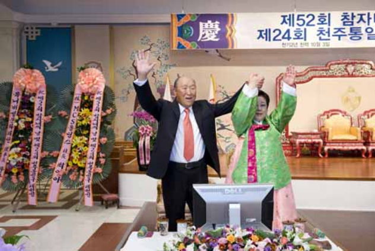
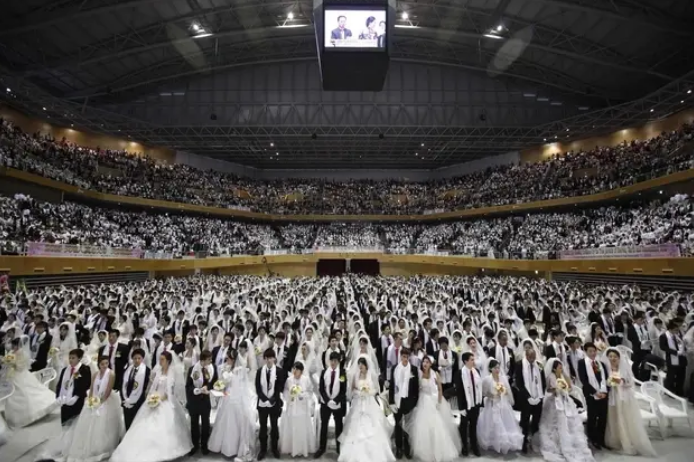

Embodiment and Rituals
Embodiment is intertwined with the Theology of the Unification Church, particularly in its beliefs about familial relationships. God is not seen as a spiritual, distant being but rather as a presence felt within loving relationships. As Sun Myung Moon states in the Divine Principle, “God wanted His creations to be object partners embodying goodness that He might take delight in them,” showing that, in God's eyes, the physical creations of humans embody his delight and presence in the world. His intention was to have loving relationships between a man and a woman and to start a family. Embodiment is seen not through traditional rituals that bring one closer to God, but rather as marriage and children, which are manifestations of God's ideal world. The biblical idea of reproduction is reflected in the Divine Principle, which states, “Be fruitful and multiply.” Moon describes how the Kingdom of Heaven is not an abstract spiritual place created through belief, but rather an embodied one on Earth, when the teachings of God are reflected to create the “Ideal World.” This idea is seen when Moon states, “This is the Kingdom of Heaven, where ultimate goodness is realized, and God feels the greatest joy. This is, in fact, the very purpose for which God created the universe.” The intention of God's ideal humanity is embodied in the coming together of loving relationships that are fruitful and multiply.
One of the clearest examples of embodiment in the Unification Church is the “True Parents,” who are believed to be the first couple to fully realize God's Ideal World and embody God's love and the original intentions God had for humanity. The “True Parents” are Sun Myung Moon and his wife, Hak Ja Han Moon, the church's leaders and founders. Cheon Seong Gyeong states in the Holy Scripture of Cheon Il Guk, “The True Parents, who are on the earth, are the True Parents of Heaven and Earth. The Cosmic Parent and the True Parents of Heaven and Earth are one.” This quote shows that the “True Parents” embody God's nature and fully express it to the rest of the world. The teachings of the True Parents emphasize that God's intentions are not embodied solely in rituals but in lived experience within marriage and family. God's presence embodied in family life is seen when Gyeong states, “I have promoted true family values because the family formed by a union between a true man and a true woman, where God can dwell, is the center of the realm of Sabbath throughout heaven and earth. Through such families, we will realize, here on earth, the Garden of Eden described in the Bible.” All of these teachings emphasize that God's presence is found in familial relationships rather than in rituals and that everyday life in the Ideal World embodies God's intentions. Once again, this is evident in quotes from Gyeong, such as “God's kingdom starts from a heavenly family” and “God dwells in each family where two become one,” which show how the embodiment of God is present within familial relationships.
The mass marriage ceremonies are where divine love and God's plan are embodied and lived out in real marriages. These ceremonies are intended to actively create the ideal humanity God intended and to embody God's intentions and love. One of the four vows state, “To become a true husband or wife who respects True Parents' example and establishes an eternal family which brings joy to God.” This shows how marriage embodies divine love and reestablishes the idea that marriage centers on God, rather than on traditional ritualistic ways. Another one of the vows is, “To create an ideal family which contributes to world peace.” This shows that the global community is another concept of the ideal world, embodying God's intentions for humanity, which can be created through families rather than policies. The scale of these ceremonies is giant, as seen here in the quote, “here was a declaration that 3.6 million couples would be "blessed” referring to massive numbers of followers in the Unification Church. This emphasizes that embodiment is not at the individual level but at a global level, creating a community that follows God's intentions for the Ideal World. Overall, the Unification Church teaches that, rather than traditional rituals, followers embody God's presence through the lived reality of marriage, family, parenting, and loving relationships.
"True Parents"
Moon and his wife with family pledge

Blessing ceremony in JFK stadium
